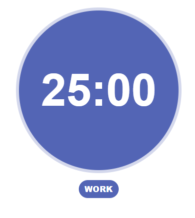
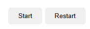
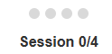
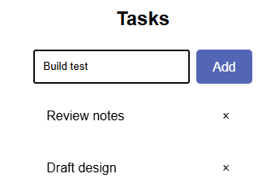
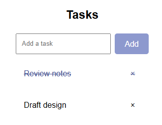
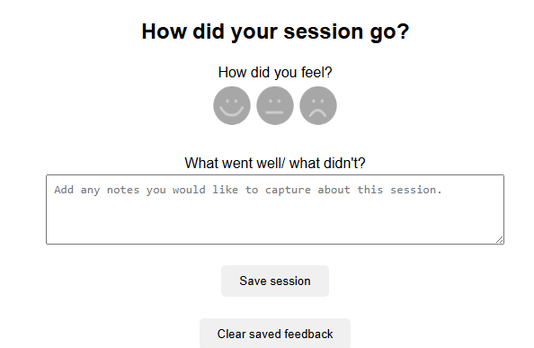
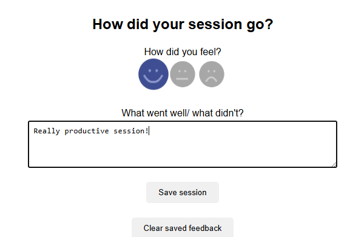

How to use this timer
How the timer works
Work sessions
The timer tracks work sessions and breaks. Each work session lasts 25 minutes.
Short breaks
After each work session, take a 5 minute break.
Long breaks
After completing 4 work sessions, the timer starts a 20 minute long break. The timer will automatically switch between work and break modes for you.
Using the timer controls
Start/Pause
Click Start to begin the timer. Click Pause if you need to temporarily stop the countdown.
Restart
Click Restart to reset the timer back to the start of a work session. This also resets your completed session count.
Session tracker
The dots represent completed work sessions. Each filled dot equals one completed work session. After four dots are filled, the cycle resets and a long break begins.
Using the task list
Add tasks using the input box below the timer. Click Add to add a new task
Click on a task to mark it as completed. Use the x icon to remove tasks.
Session Feedback
At the end of a session, you can record how the session went, select how you felt using the emoji feedback, and add optional notes about how the session went.
You can save your feedback, and clear all saved feedback by clicking on the Save session and Clear saved feedback buttons.